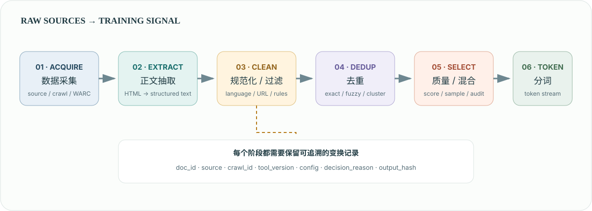

MODULE 01 / LLM DATA ENGINEERING
LLM 数据工程全景
从原始网页到可训练语料：理解数据采集、抽取、过滤、去重、评估与混合之间的因果关系。
当训练数据来自开放互联网时，我们究竟在构建什么？不是“下载一堆文本”，而是一条能够解释来源、记录变换、控制质量并可重复运行的数据生产系统。
先建立一个正确的心智模型
模型参数不会直接“读取互联网”。训练前，网页、书籍、代码、论文等原始材料必须先经过采集、解析、清洗、去重、质量选择、数据混合和分词，最后才成为训练 token。每一步都在改变训练分布：有的步骤减少噪声，有的步骤改变语言或领域比例，有的步骤则可能误删稀有但有价值的内容。

可以把这条链路写成函数复合。这里的符号表示“数据变换”，不是一个固定的标准实现：
C：采集；E：提取；U：规范化与去重；Q：质量选择；M：数据混合；T：tokenization。真实系统会增加语言识别、URL 过滤、隐私处理、评测去污染和审计步骤。
每一步都应该有数据契约
如果一个文档被过滤掉，工程师应该能回答：它来自哪个 crawl？原始 URL 是什么？哪条规则命中了？规则版本是什么？它是否属于一个重复簇？如果答案只能是“某个脚本删掉了”，流水线就不可审计。
| 字段 | 建议含义 | 为什么保留 |
|---|---|---|
doc_id | 稳定文档标识 | 跨步骤关联，不依赖当前文件顺序 |
source / crawl_id | 来源与快照 | 追踪来源偏差、版本与时间 |
url / warc_ref | 原始地址与归档定位 | 回溯原始证据与重新提取 |
text / language | 当前文本与语言标签 | 下游处理的主要载荷 |
filter_trace | 规则名、阈值、版本、结果 | 解释保留或丢弃原因 |
dedup_cluster | 重复簇标识与代表文档 | 分析重复与代表样本选择 |
六个研究锚点：不是一条“谁取代谁”的直线
下面这些工作回答的是不同问题，不能把它们压缩成一个排行榜。
C4 / T5
将 Common Crawl 清洗为大规模英文预训练语料，公开展示启发式过滤、句子完整性与去重等处理。
论文 · JMLRCCNet
把语言识别、去重和基于 Wikipedia n-gram 语言模型的困惑度筛选组织成多语言网页语料流水线。
论文 · LRECThe Pile
强调多来源语料组合与来源多样性，适合讨论“不同来源提供什么能力”。
论文 · arXivRefinedWeb
研究如何从网页数据中通过抽取、过滤与去重得到高质量开放语料。
论文 · arXivFineWeb
对抽取、基础过滤、逐快照 MinHash、C4 过滤和自定义启发式规则做消融研究。
论文 · arXivDolma
公开三万亿 token 英文语料及数据整理工具链，覆盖网页、论文、代码、书籍与百科等来源。
论文 · ACL怎样判断一次数据改动真的有效？
不能只比较清洗前后的文件大小，也不能只看一个过滤器的通过率。需要做受控的数据消融：固定模型规模、架构、tokenizer、训练 token 预算、训练步数和评测设置，只改变待研究的数据处理决策；必要时使用多个随机种子，避免把采样噪声误认为处理收益。
尤其要区分三种结论：
- 数据集事实：论文明确发布了多少 token、使用哪些来源。
- 实验结论：在特定模型、预算和评测集上，某个处理步骤带来怎样的变化。
- 工程假设：你认为某条规则能改善数据，但必须在自己的样本和训练目标上验证。
不要把“高质量”当成一个通用标签
教育内容、代码、对话、数学证明、新闻和多语言网页的质量标准并不相同。一个针对英文百科训练的规则，可能会误删代码注释、中文标点文本、论坛对话或低资源语言。数据集还会继承网页可见性偏差、版权与许可限制、个人信息、时间偏差和评测污染风险。
因此，数据质量不是脱离目标的绝对分数，而是“给定目标、来源与约束下，数据是否能提供所需训练信号”。下一章从最常见的开放网页来源 Common Crawl 开始，建立可追溯的采集方式。
交互练习：选择一个流水线阶段
点击阶段，观察该步骤需要回答的工程问题。即使不运行脚本，静态流程图也应完整表达核心结构。
采集：确认来源许可、快照标识、文件清单和原始记录定位。输出必须保留可回溯的 source 与 crawl_id。
本章参考资料
- Raffel et al. (2020), Exploring the Limits of Transfer Learning with a Unified Text-to-Text Transformer.
- Wenzek et al. (2020), CCNet: Extracting High Quality Monolingual Datasets from Web Crawl Data.
- Gao et al. (2021), The Pile: An 800GB Dataset of Diverse Text for Language Modeling.
- Penedo et al. (2024), The FineWeb Datasets: Decanting the Web for the Finest Text Data at Scale.
- Soldaini et al. (2024), Dolma: an Open Corpus of Three Trillion Tokens for Language Model Pretraining Research.